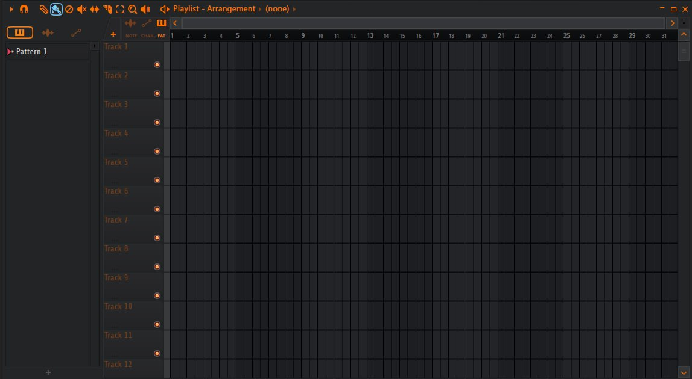
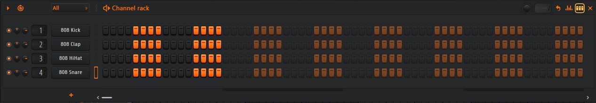
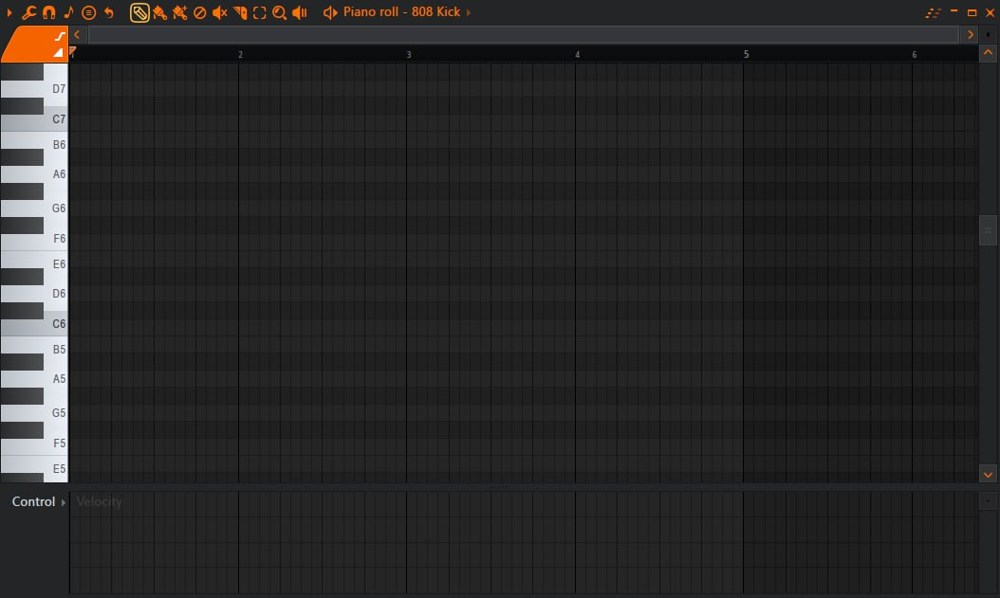
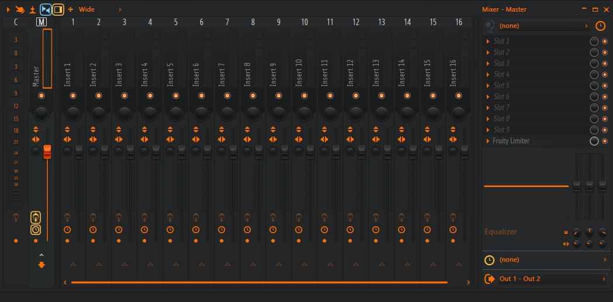
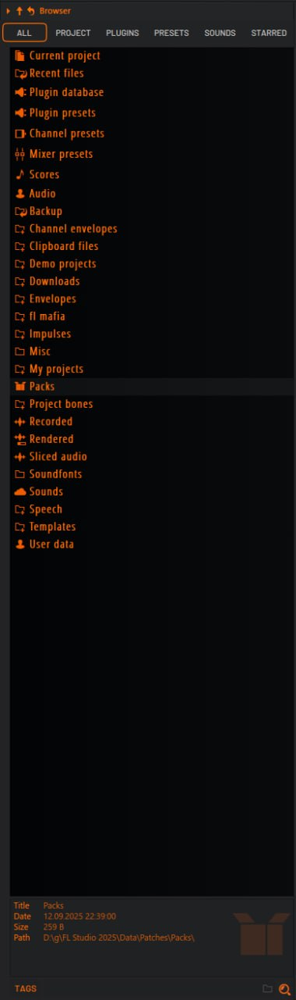

Простой и подробный гайд
FL Studio — это профессиональная программа для создания музыки. Такие программы называют DAW (Digital Audio Workstation). С помощью них создаются биты, электронная музыка, хип-хоп, поп-музыка и даже саундтреки для фильмов и игр.
FL Studio разработана компанией Image-Line и используется миллионами музыкантов по всему миру. Многие известные продюсеры создавали популярные треки именно в этой программе.
Программа позволяет работать как с аудио, так и с MIDI-данными. Это означает, что вы можете:
Главная особенность FL Studio — это система паттернов. В отличие от многих других программ, здесь сначала создаются паттерны (ритмы или мелодии), а затем они размещаются в Playlist для построения структуры трека.
Перед началом работы необходимо установить программу на компьютер. Процесс установки достаточно простой и обычно занимает всего несколько минут.
Основные шаги установки:
После установки программа создаёт папки для:
При первом запуске рекомендуется настроить аудио-драйвер. Это важно для того, чтобы звук воспроизводился без задержек.
Интерфейс программы состоит из нескольких основных окон. Каждое окно выполняет свою роль в процессе создания музыки.
Каждое из этих окон можно перемещать и масштабировать. Это позволяет настроить рабочее пространство под себя.

Процесс создания музыки обычно проходит в несколько этапов. Хотя у каждого продюсера есть свой стиль работы, существует стандартная последовательность действий.
Иногда процесс может начинаться не с ритма, а с мелодии или аккордов. Это зависит от жанра музыки и предпочтений продюсера.
Первый шаг при создании большинства треков — это ритм. Ритм создаёт основу композиции.
Обычно используются следующие элементы:
В Channel Rack можно быстро создавать паттерны барабанов, включая или выключая шаги в step-sequencer.

Мелодии создаются с помощью инструмента Piano Roll. Это один из самых мощных инструментов в FL Studio.
В Piano Roll можно:
Многие продюсеры начинают трек именно с мелодии, а затем добавляют к ней ритм.

Микшер используется для обработки звука. Каждый инструмент можно отправить на отдельный канал.
На каналах микшера добавляются эффекты:
Сведение помогает сделать трек сбалансированным и улучшить общее звучание.

Плагины — это дополнительные инструменты и эффекты.
Существует огромное количество плагинов, которые можно использовать в FL Studio.
Сэмплы — это готовые аудиофайлы, которые можно использовать в треке.
Это могут быть:
Сэмплы можно перетаскивать прямо из Browser в Playlist.

После завершения работы трек нужно экспортировать в аудиофайл.
Самые популярные форматы: